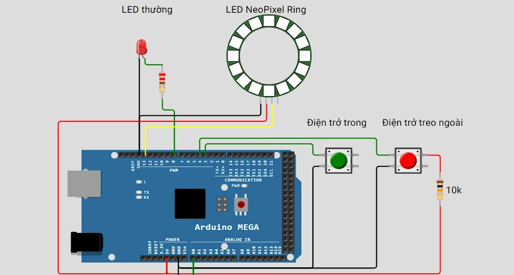
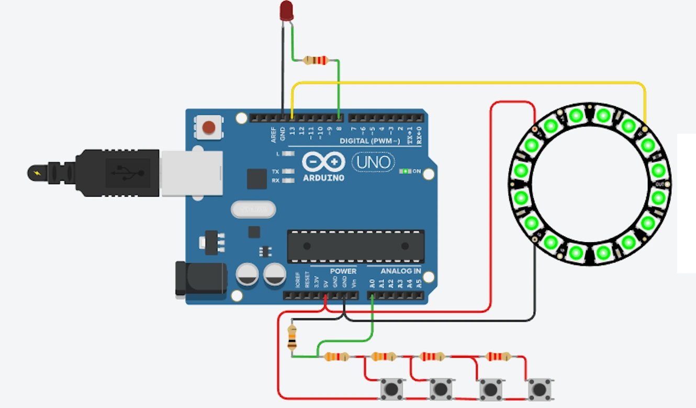

BÀI GIẢNG LẬP TRÌNH ROBOT MÊ CUNG
Bài 3. Nút nhấn và đọc tín hiệu INPUT
Bài học giúp học viên hiểu cách đọc tín hiệu nút nhấn bằng Arduino, gồm: dùng điện trở kéo lên trong, điện trở kéo ngoài, đọc một nút bằng Analog và đọc nhiều nút trên cùng một chân A0.
1. Mục tiêu bài học
- Hiểu khái niệm INPUT trong Arduino.
- Biết đọc nút nhấn bằng
digitalRead(). - Hiểu điện trở kéo lên trong
INPUT_PULLUP. - Biết cách đấu nút dùng điện trở kéo ngoài.
- Biết đọc nút nhấn bằng
analogRead(). - Biết đọc 4 nút dùng chung một chân A0.
2. Khái niệm INPUT
INPUT là chế độ để Arduino nhận tín hiệu từ bên ngoài, ví dụ: nút nhấn, công tắc, cảm biến dò line, cảm biến siêu âm, cảm biến màu...
pinMode(pin, INPUT); // Đặt chân ở chế độ đọc tín hiệu ngoài
pinMode(pin, INPUT_PULLUP); // Đọc tín hiệu, dùng điện trở kéo lên bên trong Arduino
digitalRead(pin); // Đọc tín hiệu digital: HIGH hoặc LOW
analogRead(pin); // Đọc tín hiệu analog: 0 đến 1023
Mô phỏng Wokwi:
https://wokwi.com/projects/464865150999826433
https://wokwi.com/projects/464865150999826433
3. Trường hợp 1: Một nút Digital dùng điện trở kéo lên (bên trong)
3.1. Mô tả đấu chân
- Một chân nút nhấn nối với D3.
- Chân còn lại của nút nhấn nối GND.
- Không cần điện trở ngoài.
- Trong code dùng
INPUT_PULLUP.
3.2. Lệnh điều khiển
pinMode(3, INPUT_PULLUP); // Đặt chân D3 đọc nút, dùng điện trở kéo lên trong
digitalRead(4); // Đọc trạng thái nút ở chân D43.3. Code ví dụ
#define BUTTON_PIN 3 // Nút nhấn nối với chân D3
#define LED_PIN 8 // LED thường nối với chân D8
void setup() {
pinMode(BUTTON_PIN, INPUT_PULLUP); // Dùng điện trở kéo lên trong
pinMode(LED_PIN, OUTPUT); // LED là thiết bị đầu ra
}
void loop() {
int buttonState = digitalRead(BUTTON_PIN); // Đọc trạng thái nút
if (buttonState == LOW) { // Nhấn nút thì đọc được LOW
digitalWrite(LED_PIN, HIGH); // Bật LED
} else {
digitalWrite(LED_PIN, LOW); // Tắt LED
}
}4. Trường hợp 2: Một nút Digital dùng điện trở kéo lên (bên ngoài)
4.1. Mô tả đấu chân
- Chân D4 nối với một đầu nút nhấn.
- Đầu còn lại của nút nhấn nối GND.
- Chân D4 đồng thời nối với điện trở 10kΩ lên 5V.
4.2. Lệnh điều khiển
pinMode(4, INPUT); // Đặt chân D4 ở chế độ INPUT, vì đã có điện trở kéo ngoài
digitalRead(4); // Đọc trạng thái nút4.3. Code ví dụ
#define BUTTON_PIN 4 // Nút nhấn nối với chân D4
#define LED_PIN 8 // LED thường nối với chân D8
void setup() {
pinMode(BUTTON_PIN, INPUT); // Dùng INPUT vì mạch đã có điện trở kéo lên ngoài
pinMode(LED_PIN, OUTPUT); // LED là thiết bị đầu ra
}
void loop() {
int buttonState = digitalRead(BUTTON_PIN); // Đọc trạng thái nút
if (buttonState == LOW) { // Nhấn nút kéo chân D4 xuống GND
digitalWrite(LED_PIN, HIGH); // Bật LED
} else {
digitalWrite(LED_PIN, LOW); // Tắt LED
}
}5. Trường hợp 3: Một nút đọc bằng Analog
5.1. Mô tả đấu chân
- Một chân nút nhấn nối với A0.
- Chân còn lại nối GND.
- Có thể dùng
pinMode(A0, INPUT_PULLUP)để kéo A0 lên mức cao.

Mô phỏng Tinkercad (Dùng để test nút nhấn ADC trên chân A0):
https://www.tinkercad.com/things/1pb0HgWOLKE-button
https://www.tinkercad.com/things/1pb0HgWOLKE-button
5.2. Lệnh điều khiển
pinMode(A0, INPUT_PULLUP); // Kéo A0 lên mức cao bằng điện trở trong
analogRead(A0); // Đọc giá trị analog từ 0 đến 10235.3. Code ví dụ
#define BUTTON_A0 A0 // Nút nhấn nối với chân A0
#define LED_PIN 8 // LED thường nối với chân D8
void setup() {
pinMode(BUTTON_A0, INPUT_PULLUP); // Dùng điện trở kéo lên trong cho A0
pinMode(LED_PIN, OUTPUT); // LED là thiết bị đầu ra
Serial.begin(9600); // Mở Serial để xem giá trị analog
}
void loop() {
int value = analogRead(BUTTON_A0); // Đọc giá trị analog từ A0
Serial.println(value); // In giá trị ra Serial Monitor
if (value < 100) { // Nhấn nút thì giá trị gần 0
digitalWrite(LED_PIN, HIGH); // Bật LED
} else {
digitalWrite(LED_PIN, LOW); // Tắt LED
}
delay(50); // Giảm tốc độ đọc để dễ quan sát
}6. Trường hợp 4: Bốn nút dùng chung một chân A0
6.1. Nguyên lý
Bốn nút có thể dùng chung một chân A0 bằng mạch chia điện áp. Mỗi nút được nối qua một điện trở khác nhau, nên khi nhấn từng nút, A0 sẽ nhận được một mức điện áp khác nhau.
6.2. Mô tả đấu chân
- A0 là điểm đọc tín hiệu chung.
- A0 nối với điện trở 10kΩ xuống GND để tạo mức mặc định.
- Nút 1 nối từ 5V qua điện trở 3.3kΩ về A0.
- Nút 2 nối từ 5V qua điện trở 2*3.3kΩ về A0.
- Nút 3 nối từ 5V qua điện trở 3*3.3kΩ về A0.
- Nút 4 nối từ 5V qua điện trở 4*3.3kΩ về A0.
Giá trị analog phụ thuộc điện trở thực tế. Cần mở Serial Monitor để đo rồi chỉnh ngưỡng cho phù hợp.
6.3. Lệnh điều khiển
int value = analogRead(A0); // Đọc giá trị từ mạch 4 nút
Serial.println(value); // In giá trị để xác định ngưỡng từng nút6.4. Code ví dụ đọc 4 nút
#define BUTTONS_PIN A0 // Bốn nút dùng chung chân A0
void setup() {
Serial.begin(9600); // Mở Serial để xem giá trị từng nút
}
void loop() {
int value = analogRead(BUTTONS_PIN); // Đọc giá trị analog
Serial.print("Gia tri A0 = ");
Serial.println(value);
if (value < 100) {
Serial.println("Nut 1");
}
else if (value < 300) {
Serial.println("Nut 2");
}
else if (value < 600) {
Serial.println("Nut 3");
}
else if (value < 900) {
Serial.println("Nut 4");
}
else {
Serial.println("Khong nhan nut");
}
delay(200);
}6.5. Code ví dụ dùng 4 nút để đổi màu LED Ring
#include <Adafruit_NeoPixel.h>
#define BUTTONS_PIN A0 // Bốn nút dùng chung chân A0
#define LED_PIN 13 // LED Ring nối chân D13
#define NUM_LEDS 16 // LED Ring có 16 LED
Adafruit_NeoPixel ring(NUM_LEDS, LED_PIN, NEO_GRB + NEO_KHZ800);
void setRingColor(int r, int g, int b) {
for (int i = 0; i < NUM_LEDS; i++) {
ring.setPixelColor(i, ring.Color(r, g, b)); // Gán màu cho LED thứ i
}
ring.show(); // Cập nhật toàn bộ LED Ring
}
void setup() {
Serial.begin(9600); // Mở Serial để debug
ring.begin(); // Khởi tạo LED Ring
ring.show(); // Tắt LED ban đầu
}
void loop() {
int value = analogRead(BUTTONS_PIN); // Đọc giá trị từ A0
Serial.println(value); // In ra để hiệu chỉnh ngưỡng
if (value < 100) {
setRingColor(0, 255, 0); // Nút 1: xanh lá - sẵn sàng
}
else if (value < 300) {
setRingColor(0, 0, 255); // Nút 2: xanh dương - đang chạy
}
else if (value < 600) {
setRingColor(255, 0, 0); // Nút 3: đỏ - lỗi
}
else if (value < 900) {
setRingColor(255, 255, 0); // Nút 4: vàng - chờ
}
delay(100);
}7. Bài tập thực hành
- Dùng nút D4 với
INPUT_PULLUPđể bật/tắt LED D8. - Dùng nút D4 với điện trở kéo ngoài để bật/tắt LED D8.
- Đọc một nút bằng A0 và in giá trị ra Serial Monitor.
- Đọc 4 nút bằng A0 và ghi lại giá trị thực tế của từng nút.
- Dùng 4 nút A0 để chọn 4 màu khác nhau cho LED Ring.
8. Lỗi thường gặp
Lỗi 1: Nút đọc lúc HIGH lúc LOW không ổn định do chân bị treo, chưa dùng điện trở kéo.
Lỗi 2: Dùng
INPUT_PULLUP nhưng quên rằng nhấn nút là LOW, không nhấn là HIGH.
Lỗi 3: Mạch điện trở kéo ngoài đấu sai vị trí nên nút không hoạt động đúng.
Lỗi 4: Bốn nút A0 đọc sai vì ngưỡng chưa được hiệu chỉnh theo giá trị thực tế.
Lỗi 5: Nhấn nút một lần nhưng chương trình nhận nhiều lần do hiện tượng dội nút.